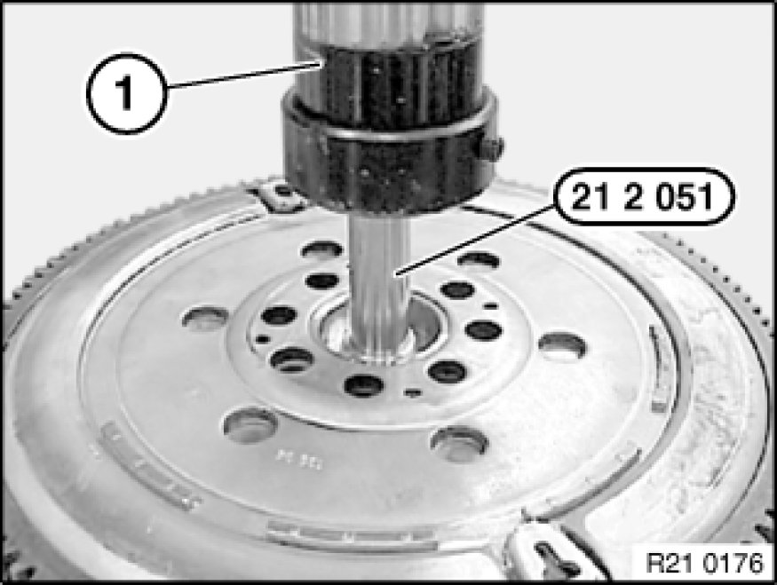
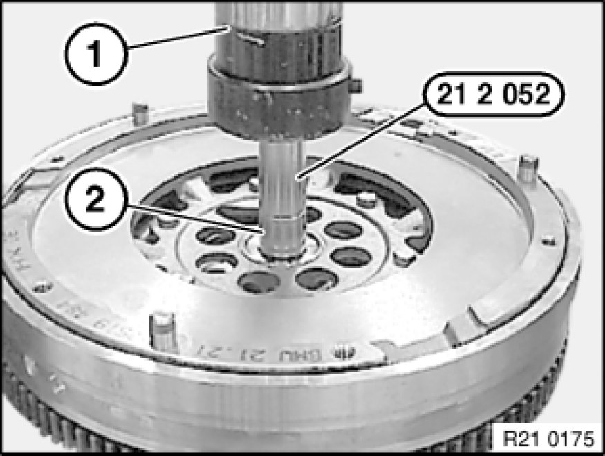

During Trans Servicing
11 22 513 - Replacing roller bearing for dual-mass flywheel

Special tools required:
- 21 2 051
- 21 2 052

Note:
Flywheel removed!

Using hydraulic press (1) and special tool 21 2 051, press out dual-mass flywheel downwards on engine side.
Important!
Risk of damage:
Roller bearing must not be driven out.

Push roller bearing (2) onto special tool 21 2 052.
Using hydraulic press (1), press roller bearing into dual-mass flywheel as far as it will go on clutch side.
Important!
Risk of damage:
Observe press-in instruction:
- Roller bearing must not be driven in.
- Roller bearing mounting force/travel monitored:
Min. 2000N 1 mm before end of pressing in.
Max. 15000N during entire press-in procedure.